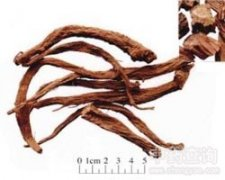

续断

拼音
Xù Duàn
别名
川续断、和尚头、山萝卜
来源
本品为川续断科植物川续断Dipsacus asperoides C. Y. Cheng et T. M. Ai （或Dipsacus asper Wall）的干燥根。秋季采挖，除去根头及须根，用微火烘至半干，堆置“发汗”至内部变绿色时，再烘干。
生境分布
主产湖北、四川、湖南、贵州。陕西、云南、江西、广东等地亦产。
药材特点
多年生草本，高60～90厘米。根圆锥形，主根明显，或有数条并生，外皮黄褐色。茎直立，多分枝，具棱和浅沟，生细柔毛，棱上有疏刺毛。叶对生。夏末秋初开花，头状花序近球形。瘦果椭圆楔形，长约3～4毫米，通常外被萼片，有四棱，浅褐色。
性状
本品呈圆柱形，略扁，有的微弯曲，长5～15cm，直径0.5～2cm。表面灰褐色或黄褐色，有稍扭曲或明显扭曲的纵皱及沟纹，可见横裂的皮孔及少数须根痕。质软，久置后变硬，易折断，断面不平坦，皮部墨绿色或棕色，外缘褐色或淡褐色，木部黄褐色，导管束呈放射状排列。气微香，味苦、微甜而后涩。
性味
苦、辛，微温。
功能主治
补肝肾，强筋骨，续折伤，止崩漏。用于腰膝酸软，风湿痹痛，崩漏，胎漏，跌扑损伤。酒续断多用于风湿痹痛，跌扑损伤。盐续断多用于腰膝酸软。
用法用量
9～15g。
化学成分
川续断根含生物碱、挥发油，续断根含续断碱及挥发油。
药理作用
1：抗维生素E缺乏症：经小白鼠和鸡试验：证明续断有抗维生素E缺乏症的作用
2：止血、镇痛作用：对痈疡有排脓、止血、镇痛、促进组织再生的作用
摘录
《全国中草药汇编》